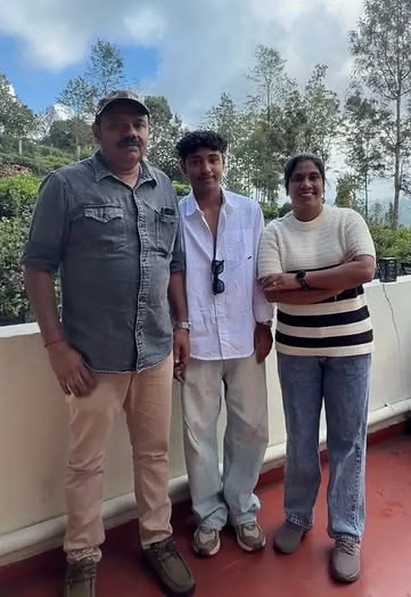
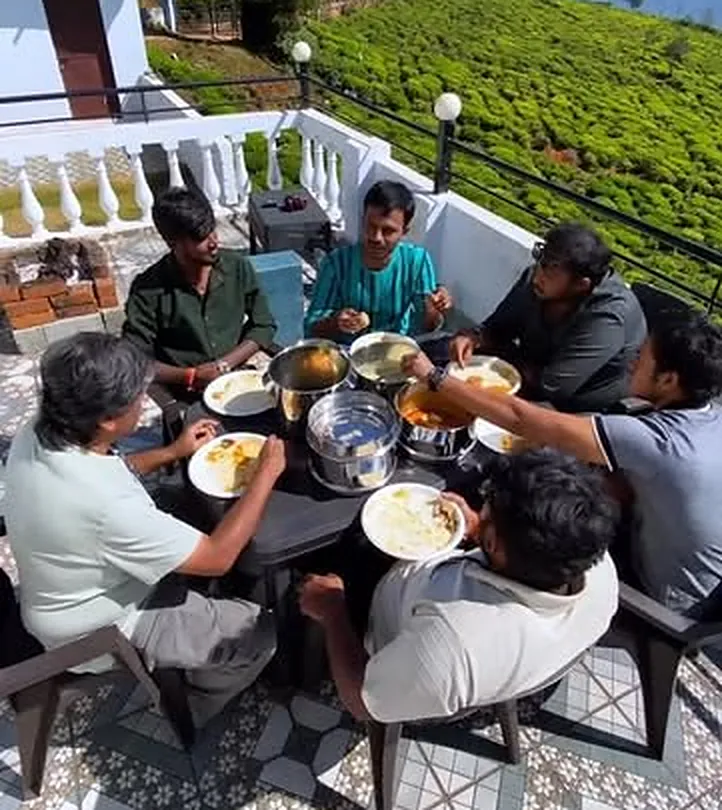
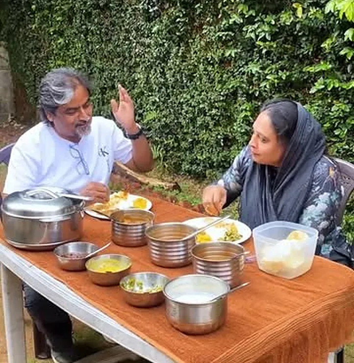
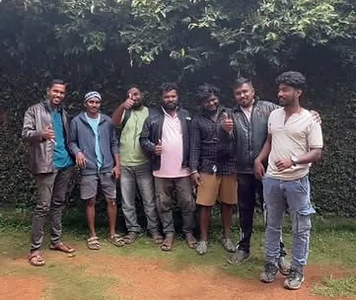
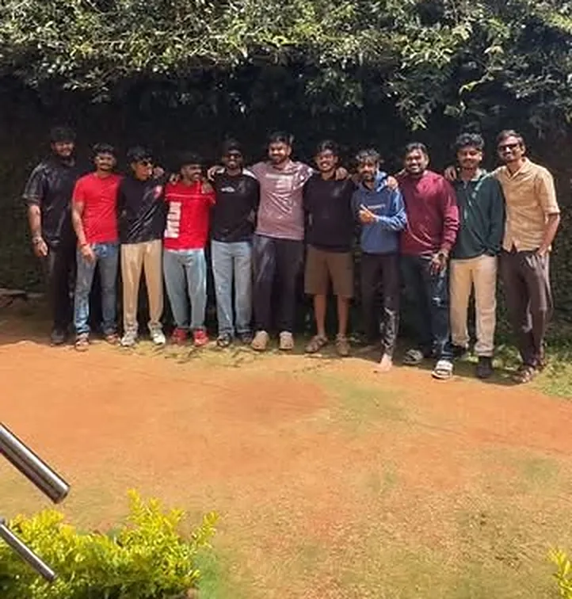
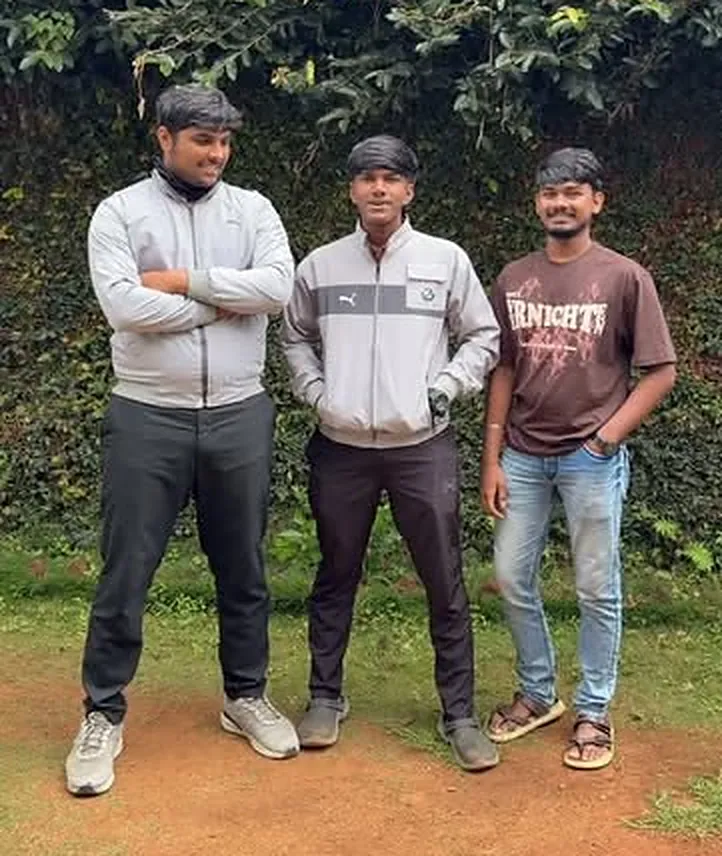

Tavish Hills Home stay & private villa
Post card
Kotagiri

Post card
Kotagiri

Hill views, homemade food and trekking, in Kotagiri, Tamil Nadu.


Recent groups, each welcomed by name on our Instagram, most with a booking code.





Send your town, your dates and how many of you are coming, on WhatsApp or by phone.